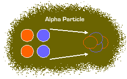
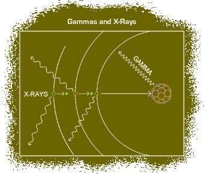
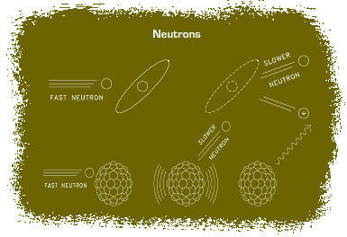

All radiation is a form of energy. As described through LET, energy is lost by ionizing radiation along the path through which it is traveling. As a result, the energy from the interactions is transferred from the radiation to a medium. As this transfer takes place, the medium is affected. How the medium is affected is determined by the type of radiation. Also, the type of radiation impacts whether it is primarily an external or internal health threat. Select each tab to learn about ionizing radiation interactions with matter.
Alpha
An alpha particle is formed when the n:p ratio is too low in the nucleus of an atom. An alpha particle consists of two neutrons and two protons and has a charge of +2. It is heavy and slow as compared to other types of radiation.
Due to their large size, the maximum distance alpha particles can travel through air is about 10cm. Alpha particles have a high LET, meaning they transfer large amounts of energy to an absorber while traveling through the medium. Most alpha particles can be stopped by paper or skin.
Alpha particles can interact with matter through ionization or excitation.
Beta
A beta particle, sometimes called a negatron, is identical in mass and charge (-1) to an electron. It is created when the n:p ratio of an element is too high, causing a neutron to change into a proton and a beta particle. When this occurs, the beta is simultaneously emitted and a new element is formed.
Because a beta particle is much lighter and faster than an alpha particle, it travels farther. However, the beta particle has less charge associated with it and therefore has less ionizing ability compared to the alpha particle. Therefore, the beta particle has a lower probability of interaction than an alpha particle and a much lower LET. These attributes make it less likely to suffer a “collision” or near collision with matter along a given length of path, allowing it to travel greater distances between collisions.
Beta particles can interact with matter through ionization and bremsstrahlung.
Another type of beta particle that can occur is the positron.
Gamma and X-Ray
Gamma radiation is similar to x-ray because both are photons that have no mass or charge and travel at the speed of light. Unlike x-rays, gamma rays are emitted from the nucleus and result when the nucleus transitions from a higher to lower energy state. X-rays and gamma rays are the least ionizing and have the lowest LET but travel the farthest.
Gamma and x-rays interact with matter through the photoelectric effect, Compton scatter, and pair production.
Neutrons
Neutrons are the most penetrating of all types of radiation. They are much less common than other forms of ionizing radiation and are formed from fission processes.
Unlike the alpha or beta, the neutron has no electrical charge. Neutrons have long or short ranges which are determined by the amount of kinetic energy present and how the neutrons were produced. The range of neutrons is also determined by the type of materials that they pass through.
Neutron emissions are not as commonly encountered in Air Force operations as other forms of radiation. Personnel might encounter a neutron source with an Americium-241 Beryllium (241AmBe) source that is used in portable soil moisture density gauges which may be used by construction contractors or construction/engineering units. Intrinsic radiation is another form of neutron radiation produced from the spontaneous fission of Plutonium-240 (240Pu) and Plutonium-238 (238Pu) in nuclear weapons.